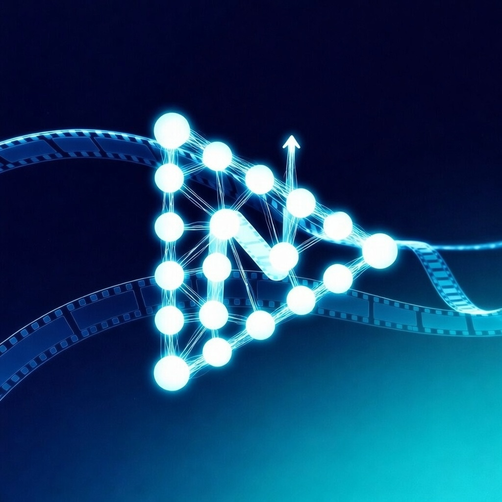
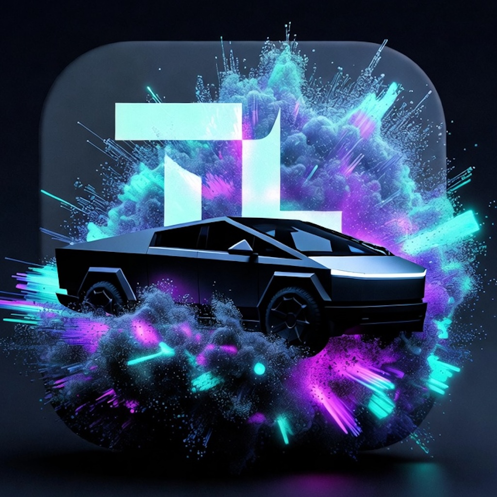

Welcome to the support page for my apps chopstick ZILLA, All-Sight, Video -> MP3, NeuralVid, and TLGen.
"chopstick ZILLA" is a unique app designed to simulate the supaheavy booster catch of the starship launch system.
Email Support"All-Sight" is an app that records FSD conveniently with only your phone in surround view. Capture wide angle, telephoto & rear-facing video all at once in 4K+HD.
Email SupportConvert your videos to high-quality MP3, M4A, or WAV audio with Video to MP3! Trim and customize your audio clips, export to Files, or create Tesla lock chimes. Easy-to-use interface with real-time waveform editing. Follow @bstarr119 on X for updates. Perfect for music lovers and creators!
Email Support
NeuralVid – The Smartest AI Video Editor
Who has time for editing? NeuralVid uses advanced AI to transform your long videos into perfectly timed, engaging shorts – automatically. Just select a video from your library. NeuralVid transcribes the audio, analyzes the content with cutting-edge AI, and intelligently selects the most captivating moments. In minutes, you get a polished short ready for YouTube, TikTok, Instagram Reels, or X.
Key Features:
• AI-Powered Clip Selection – Finds the best 5-60 second highlights using smart analysis.
• Automatic Transcription – Accurate on-device speech-to-text with timestamps.
• Seamless Export – High-quality shorts saved to your Photos or shared directly.
• Unlimited Creativity – Perfect for creators, vloggers, educators, and anyone with footage.
No manual trimming, no complex tools. NeuralVid does the hard work so you can focus on creating. Go Pro for unlimited shorts with monthly or yearly subscription, or one-time lifetime access (early adopters only). Download now and turn hours of footage into viral gold – effortlessly.
Privacy: All processing happens on-device. Your videos stay private.

TLGen — Grok AI Light Shows for Every Tesla
The ultimate AI-powered light show creator for the entire Tesla lineup. Import any song and let Grok 4.1 design breathtaking, perfectly synchronized light shows for your Cybertruck, Model S, Model 3, Model X, or Model Y.
Whether you drive a Cybertruck with its massive light bars, a refreshed Model S/X with signature headlights, or a Model 3/Y with the latest light show support — TLGen has you covered.
Realistic 3D Preview
Watch your show come to life instantly on an accurate 3D model of your specific Tesla. Every strobe, chase, barber pole, explosion, and color wave is perfectly synced to the music.
Official .fseq Export
Export clean, Tesla-ready .fseq + MP3 files that work natively on every supported model. Just plug the USB into your Tesla and enjoy the show.
Works on the Complete S3XY Lineup + Cybertruck
• Cybertruck (full light bar control + frunk, charge port, windows, mirrors)
• Model S & Model X (latest light show capable hardware)
• Model 3 & Model Y (including Highland and Juniper refreshes)
Features
• Powered by Grok 4.1 — the most creative AI light show designer
• Full songs supported — no artificial length limits
• Beautiful real-time 3D visualizer (choose your exact Tesla model)
• True official .fseq export (xLights format — works on every Tesla)
• Load and validate real .fseq files in the app
• Private & secure — your music never leaves your device
Built by @BStarr119 — creator of the viral Coldplay & BTS “My Universe” Cybertruck light shows that inspired the entire community. From elegant and emotional to high-energy and mind-blowing — create shows that make your Tesla stand out on every road.
Pricing
Start free with 3 full shows every month. Upgrade anytime with credit packs, Pro Monthly, or Lifetime Pro.
Make your Tesla the brightest, most unique one on the road — no matter which model you drive. Download TLGen today and turn every drive into a light show.
For any questions, email me. I’ll respond within 24-48 hours.
Also, reach out to me on @bstarr119. I am even more responsive there.